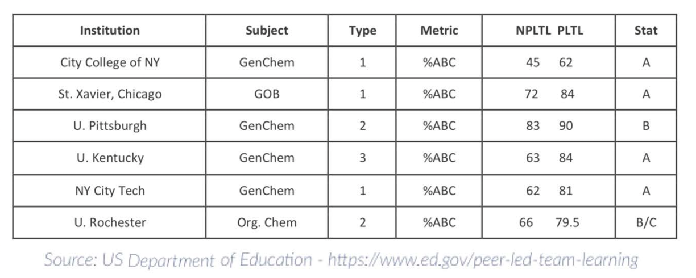
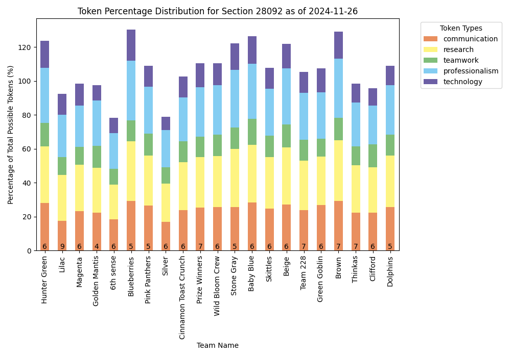

Using Peer-Enhanced Blockchain-Based Learning Environments to Promote Student Engagement and Retention
Patricia Brooks
Katie Cumiskey
Dan McCloskey
Department of Psychology, College of Staten Island, City University of New York
Our Goal:
Leverage technology (Blockchain and AI) in the classroom to enhance:
Recognition of career development
Human to human contact
Engagement and retention
Test Case: Introduction to Psychology (PSY 100)
The most enrolled science-based course in the country.
A General Education course with a surprisingly high failure rate and clear achievement gaps.
PSY 100 at CSI:
|
Assignments |
Details about Assignments |
Grade % |
|
Self-guided Noba Modules and Quizzes |
Complete Noba quizzes on Blackboard: one for each reading module. You can take each quiz 3 times. Only the highest score counts.
25 quizzes in total: each count as 1% of final grade |
25%
|
|
Qualtrics Homework |
Complete Qualtrics assignments (links posted to Blackboard).
Each assignment will take about 1 hour to complete and is graded based on completion. Some assignments require downloading Microsoft Excel or using Microsoft Excel Live.
9 Qualtrics assignments in total, each count as 2% of final grade. 6 Excel worksheets in total, each count at 1% of final grade |
24% |
|
Low Stakes Writing/In Class Work |
Each class will begin with a low stake writing prompt, and classes may include in class assignments that students must complete, either individually or with groups. These will be collected at the end of class and count as 6% of the grade. |
6% |
|
Psych Disorders Presentation |
Students work in groups to make PowerPoint presentations about psychological disorders. A list of topics, the presentation template, an example, and a grading rubric have been uploaded to Blackboard. Information on many of these topics can be found in the NOBA Psych Disorder supplementary text: http://noba.to/4tp8sang
Presentations may be given live in class (live) or recorded on Zoom and uploaded to Blackboard.
The slide component is worth 10% of your final grade. The presentation component is worth 5% of your final grade. |
15% |
|
Tuskegee- Willowbrook Role Play |
This writing assignment (located on the Blackboard discussion board) focuses on research ethics. Part 1 covers the history of research misconduct at Tuskegee, AL and at the Willowbrook State School (present site of the College of Staten Island). Part 2 involves taking on the role of one of the individuals who took part in the research.
The written part counts as 10% of your final grade. In-class role play counts as 5% of your final grade. |
15% |
|
Hidden Figures Poster Presentation |
Students work in groups to research and present on a psychologist that has been overlooked by traditional textbooks. A list of psychologists, the poster template, an example, and a grading rubric have been uploaded to Blackboard.
Presentations may be given live in class (live) or recorded on Zoom and uploaded to Blackboard.
The poster component is worth 10% of your final grade. The presentation component is worth 5% of your final grade. |
15% |
|
TOTAL |
|
100%* |
Introduction to Psychology at CSI:
| Asian | Black | Hispanic | White | |
| Proportion of all undergraduates in NYC (%) | 69 | 70 | 73 | 42 |
| Demographics of CUNY undergraduates (%) | 24 | 24 | 27 | 25 |
| CSI Undergraduate Demographics (SP2019, %) | 11.4 | 13.2 | 26.4 | 44.2 |
| 6-Year BA/BS graduation rate (2014 cohort, %) | 32 | 28.6 | 28.2 | 50.8 |
| 6-Year graduation rate of Psychology majors (%) | 32 | 18 | 18 | 45 |
| Enrollment in PSY100 (FA2018-2022, %) | 10 | 18 | 29 | 39 |
| DFW rate in PSY100 (FA2018-2022, %) | 19 | 37 | 35 | 22 |
Maybe the problem isn't the curriculum, but how it's presented.
"Colleges are responsible to provide skills to be successful in the workforce"
Students of color were more likely to "strongly agree" with this statement than white students.
We are providing workforce skills:
|
Assignments |
Details about Assignments |
Grade % |
|
Self-guided Noba Modules and Quizzes |
Complete Noba quizzes on Blackboard: one for each reading module. You can take each quiz 3 times. Only the highest score counts.
25 quizzes in total: each count as 1% of final grade |
25%
|
|
Qualtrics Homework |
Complete Qualtrics assignments (links posted to Blackboard).
Each assignment will take about 1 hour to complete and is graded based on completion. Some assignments require downloading Microsoft Excel or using Microsoft Excel Live.
9 Qualtrics assignments in total, each count as 2% of final grade. 6 Excel worksheets in total, each count at 1% of final grade |
24% |
|
Low Stakes Writing/In Class Work |
Each class will begin with a low stake writing prompt, and classes may include in class assignments that students must complete, either individually or with groups. These will be collected at the end of class and count as 6% of the grade. |
6% |
|
Psych Disorders Presentation |
Students work in groups to make PowerPoint presentations about psychological disorders. A list of topics, the presentation template, an example, and a grading rubric have been uploaded to Blackboard. Information on many of these topics can be found in the NOBA Psych Disorder supplementary text: http://noba.to/4tp8sang
Presentations may be given live in class (live) or recorded on Zoom and uploaded to Blackboard.
The slide component is worth 10% of your final grade. The presentation component is worth 5% of your final grade. |
15% |
|
Tuskegee- Willowbrook Role Play |
This writing assignment (located on the Blackboard discussion board) focuses on research ethics. Part 1 covers the history of research misconduct at Tuskegee, AL and at the Willowbrook State School (present site of the College of Staten Island). Part 2 involves taking on the role of one of the individuals who took part in the research.
The written part counts as 10% of your final grade. In-class role play counts as 5% of your final grade. |
15% |
|
Hidden Figures Poster Presentation |
Students work in groups to research and present on a psychologist that has been overlooked by traditional textbooks. A list of psychologists, the poster template, an example, and a grading rubric have been uploaded to Blackboard.
Presentations may be given live in class (live) or recorded on Zoom and uploaded to Blackboard.
The poster component is worth 10% of your final grade. The presentation component is worth 5% of your final grade. |
15% |
|
TOTAL |
|
100%* |

National Association of Colleges and Employers competencies
We are providing workforce skills:
|
Assignments |
Details about Assignments |
Grade % |
|
Self-guided Noba Modules and Quizzes |
RESEARCH AND CRITICAL THINKING |
25%
|
|
Qualtrics Homework |
COMMUNICATION, TECHNOLOGY AND DATA LITERACY |
24% |
|
Low Stakes Writing/In Class Work |
PROFESSIONALISM/ TIME MANAGEMENT, COMMUNICATION |
6% |
|
Psych Disorders Presentation |
TEAMWORK, TECHNOLOGY AND DATA LITERACY, ORAL AND WRITTEN COMMUNICATION |
15% |
|
Tuskegee- Willowbrook Role Play |
TEAMWORK, TECHNOLOGY AND DATA LITERACY, ORAL AND WRITTEN COMMUNICATION |
15% |
|
Hidden Figures Poster Presentation |
TEAMWORK, TECHNOLOGY AND DATA LITERACY, ORAL AND WRITTEN COMMUNICATION |
15% |
|
TOTAL |
|
100%* |
Goal 1: Translate class activities into workforce skills
Translate gradebook items into skill tokens based on what was completed and when
Generate a Non-Fungible Token (NFT) for each skill token and place it on a public blockchain
Want rapid public credentials? Blockchain can help!
1. Download gradebook from Blackboard and de-identify it.
2. Upload gradebook entries to a secured remote server running MongoDB
3. Compare gradebook entries to a skills map and assign appropriate tokens to students.
| Item | Threshold | Communication | Research | Teamwork | Professionalism | Technology | Due |
|---|---|---|---|---|---|---|---|
| Noba Quiz 1: Thinking Like a Psychological Scientist | 2 | 1 | 8-Mar-24 | ||||
| Noba Quiz 2: Prejudice, Discrimination and Stereotyping & Psychology and Racism | 2 | 1 | 8-Mar-24 | ||||
| Psych Disorders Presentation (Recording) | 3 | 3 | 2 | 20-May-24 | |||
| Psych Disorders Presentation (PowerPoint) | 7 | 3 | 3 | 1 | 3 | 20-May-24 | |
| Qualtrics HW #3 | 1 | 1 | 2 | 2 | 16-Feb-24 | ||
| Qualtrics HW #3: Upload Excel Graph | 1 | 5 | 16-Feb-24 |
4. Using a smart contract in Brownie, mint an NFT for each token and transfer the NFT to the student's wallet on an Ethereum testnet blockchain (sepolia)
The transactions
Etherscan Transaction LogsThe tokens
pebble-learn.com
Goal 2: Utilize peer-led team learning to reinforce classroom and workforce skills
Generate teams of 6-8 students, led by a peer leader, which meet during class time
Gamify workforce skills development by creating a team-based competition
Peer-led Team Learning
Chemistry Lab
Lecture?
Assigning teams in a large class? AI can help!
Students and prospective peer leaders complete a survey before the semester.
"Virtual twins" of students are made in an agent based model and 1000 simulated teams are made to determine the best matches
Teamates are clustered in groups of 6-8 based on interests, hobbies and career goals, and each team has diversity in background and percieved academic ability.
Peer leaders "break out" with teams during class time to discuss upcoming assignments, career readiness, and college life

Weekly team leaderboards are posted and discussed in class
Our Preliminary Outcomes (Fall 2023 - Sp 2024):
| Matched Cohort | PEBBLE | |||
| Number of students | 115 | 115 | ||
| Received a C or Better in PSY100* | 51 (44%) | 89 (77%) | ||
| Current GPA* | 1.89 ± 0.127 | 2.81 ±0.078 | ||
| Currently Enrolled at CSI (Fall 2024)* | 53 (46%) | 84 (73%) | ||
| * significant difference (p<0.05) | ||||
Next Steps:
Expand beyond CSI and PSY100
Hostos is planned for Spring 2025Improve our NFT turnaround time (confirmation bottleneck)
Build our own blockchain or move to a new one DEVELOPERS NEEDED!Develop Dynamic NFTs
Stacked credentials to share with potential employers Blockchain games withh virtual team competions throughout the semesterThank You!

Graduate Students: Riya Anjaria, Shibani Chakravorty, Donnan Gravelle, Antonella Guadagnino, Arshia Lodhi
Undergraduate Peer Leaders